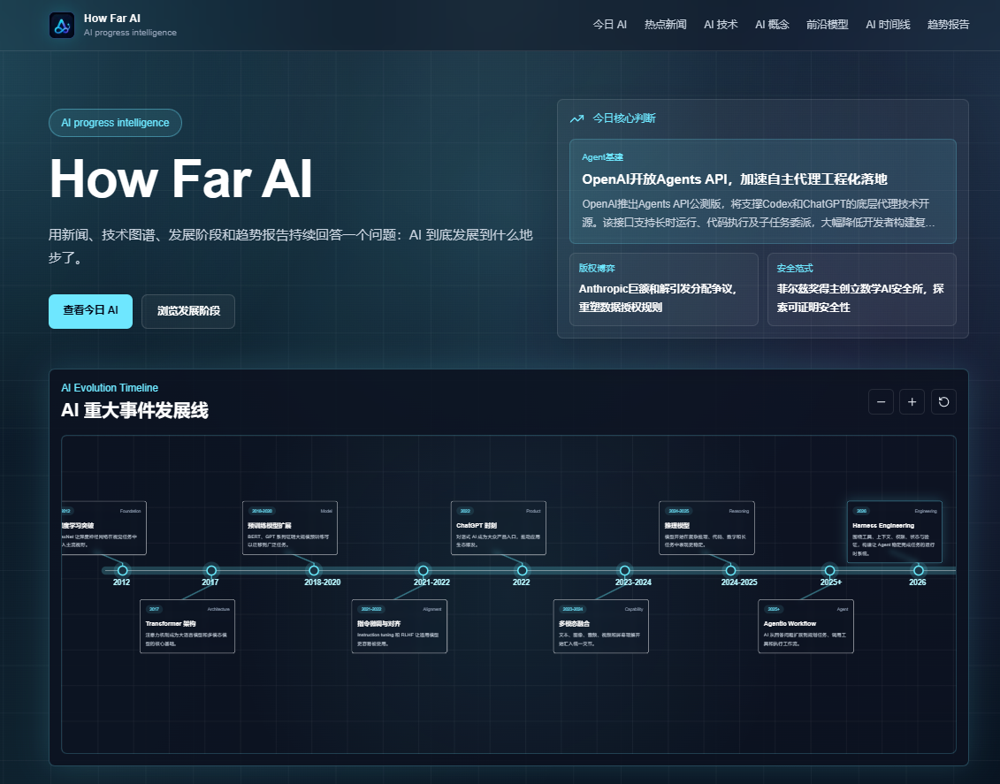
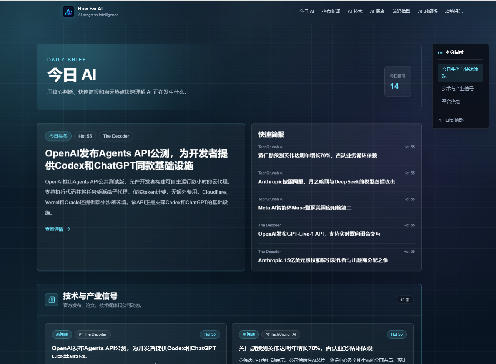

← 返回首页
把模型、产品
和可靠性做在一起。
这里记录完整的项目背景、技术路径与个人贡献。主页只放摘要，详情页才展开每个系统是如何被搭建、验证和交付的。
PROJECTS / AI ENGINEERING
项目 01 · 模型训练与部署 · 2025.10 — 2026.2
首次病程记录智能写作与辅助生成系统
面向真实临床场景，设计首次病程记录智能生成系统，自动生成病例特点、诊断依据、鉴别诊断和诊疗计划，并结合医生书写习惯与山东省病历书写规范提升文书质量。
Qwen3-14BSFT / DPOvLLMLlamaFactoryMulti-Agent
我的主要工作
- 预处理 5000+ 条脱敏真实患者电子病历，覆盖心内科和胸外科，通过结构规范化、噪声过滤和数据重构提升训练数据质量。
- 基于 LlamaFactory 对 Qwen3-14B 进行多轮 SFT 与 DPO 训练，并结合 vLLM 实现本地化部署与高效推理。
- 使用 BeautifulSoup 采集公开医学知识资源，构建覆盖 200+ 疾病的鉴别诊断知识图谱。
- 设计 Generator–Reviewer–Refiner 多智能体协同流程，并以 checklist、ROUGE、BLEU 综合评估，两个指标得分均超过 80%。
项目 02 · AI 全栈开发 · 2026.4 — 2026.6
How Far AI——AI 前沿情报智能分析平台
聚合新闻、论文、开源项目和社区热点，利用大语言模型完成内容分析、知识沉淀与趋势报告生成，实现 AI 技术动态的自动化追踪。
Next.jsReactTypeScriptMySQLScheduler / WorkerLLM API
我的主要工作
- 搭建热点新闻、技术知识、前沿模型、演进时间线和趋势报告等核心模块。
- 接入 11 个 RSS/Atom 新闻源及 GitHub、Hacker News、Hugging Face、Bilibili 等平台，完成筛选、去重与结构化入库。
- 调用大语言模型完成新闻摘要、观点提取、技术标签分类与影响评估，并通过超时控制、规则兜底和多模型切换提高稳定性。
- 基于 Scheduler、任务队列与 Worker 编排采集、内容补全、知识发现和报告生成任务，设计融合来源可信度、相关度与平台热度的 Hot Score。
访问项目演示 →

How Far AI · 首页

How Far AI · 今日 AI
项目 03 · AI 全栈开发 · 2026.8 — 至今
微屿 Cay——简约跨平台笔记与桌面便笺应用
基于 Tauri 2、Vite、React、TypeScript、Rust 与 SQLite 构建本地优先的跨平台桌面应用，支持 Markdown 编辑、双向链接、多类型资料管理与桌面便笺。
Tauri 2ReactTypeScriptRustSQLiteCodeMirror 6
我的主要工作
- 划分渲染层、领域服务层与系统能力层，实现前后端能力解耦。
- 集成 CodeMirror 6 构建 Markdown 编辑器，支持源码、分栏和预览三种视图，以及大纲导航、滚动同步和快捷格式化。
- 基于 UUIDv7 实现稳定双向链接，支持笔记重命名、文件夹移动后的引用解析、链接标题同步与失效链接识别。
- 基于 Tiptap 构建富文档编辑器与多类型资料库，统一管理富文档、纯文本、PDF、图片及 Office 文件，并支持预览、转换与 DOCX/PDF 导出。
- 实现桌面便笺、系统托盘、单实例唤醒与窗口状态管理，结合原子保存、版本冲突处理和退出前同步保障多窗口数据一致性。
查看项目仓库 →
项目 04 · 数据预处理 · 2024.12 — 2025.1 / 2025.11 — 2025.12
扁仓中医大模型
参与构建中医领域大语言模型 BianCang，基于中医药典、医学书籍与真实医院病历等数据，采用持续预训练与监督微调，增强模型在中医辨证分型、疾病诊断和治疗方案生成等任务中的知识理解与推理能力。
合作单位：齐鲁工业大学（山东省科学院）、山东中医药大学附属医院
BianCangContinual PretrainingSFTTraditional Chinese Medicine
我的主要工作
- 搜集并规范化处理中医书籍、药典等公开语料，完成文本清洗、格式统一与质量筛查，为持续预训练提供领域语料数据支持。
- 基于已有 QA 数据利用 LLM 扩展多轮中医问答数据集，补充回答要点与上下文信息，提升指令数据的多样性和任务适配性。
了解 BianCang →
项目 05 · 爬虫、数据预处理与模型训练 · 2025.2 — 2025.3
知识蒸馏医疗实战项目
围绕 Qwen2.5-7B 的医疗推理能力增强，整理 4 个中文医疗与心理健康蒸馏数据集，使用 LLaMA-Factory 完成 LoRA 微调，并对比训练前后的推理与总结回复表现。
Qwen2.5-7BLoRALLaMA-FactoryMedical ReasoningKnowledge Distillation
我的主要工作
- 处理医疗病历蒸馏数据，构建包含问题、推理依据和总结回复的指令样本。
- 整合医疗、心理健康与中医等 4 个中文蒸馏数据集，共计 62,766 条数据，并完成格式转换与注册。
- 基于 LLaMA-Factory 使用 LoRA 对 Qwen2.5-7B-Base 进行微调，通过 BLEU、ROUGE 等指标对比训练前后的生成效果。
- 记录模型重复输出、推理标签不稳定等问题，分析提示词、数据规模与强化学习等后续优化方向。